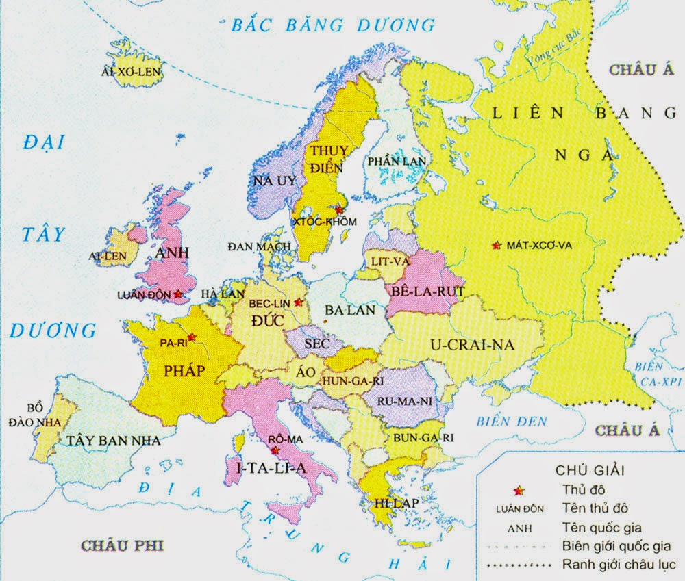

Cộng hòa Séc là một quốc gia thuộc khu vực Trung Âu và là nước không giáp biển, giáp Ba Lan về phía bắc, giáp Đức về phía tây, giáp Áo về phía nam và giáp Slovakia về phía đông.
Thủ đô và thành phố lớn nhất của quốc gia là Praha, với số dân 1,3 triệu người.
Dân số: 10,5 triệu
Diện tích: 78.866 km²
Chính phủ: Cộng hòa đại nghị
Lập pháp: Quốc hội
Thượng viện: Thượng nghị viện
Hạ viện:Hạ nghị viện
GDP (PPP): Tổng số: 313 tỷ USD
GDP (danh nghĩa) (2011):Tổng số: 215 tỷ USD
Bình quân đầu người: 20444 USD

1. Cộng đồng người nước ngoài khá lớn
Cộng hòa Séc có 10 triệu dân với khoảng nửa triệu người nước ngoài đang sinh sống, đông nhất phải kể đến Ukrajina với 106 nghìn, đứng thứ nhì là Slovakia với 102 nghìn người. Cộng đồng người Việt Nam đứng thứ ba với 57 nghìn, tiếp theo là đến Nga với 35 nghìn, rồi đến Đức 21 nghìn, Ba Lan 20 nghìn...
Ngày 3.7.2013 chính phủ Séc đã quyết định công nhận cộng đồng người Việt (thực chất chỉ là cộng đồng người Séc gốc Việt chứ không phải tất cả người Việt sống ở Séc) là một dân tộc thiểu số. Với quy chế là một dân tộc thiểu số, cộng đồng người Việt sẽ có điều kiện và được hỗ trợ kinh phí từ ngân sách để phát triển hơn nữa về văn hóa, truyền thống và đặc biệt là ngôn ngữ của dân tộc mình. Tại các địa phương có nhiều người Việt sinh sống, trẻ em có thể được học kiến thức bằng tiếng Việt. Quy chế này còn đảm bảo cho người Việt quyền sử dụng tiếng Việt tại công sở cũng như tòa án. Ngoài ra, cộng đồng người Việt Nam tại Séc có thể thành lập chương trình phát thanh và truyền hình bằng tiếng Việt.
Chợ SAPA, hương Việt giữa lòng thủ đô Praha là chợ người Việt to nhất tại châu Âu.
2. Séc là quốc gia nằm chính giữa châu Âu
Là thành viên Liên minh châu Âu nhưng vẫn sử dụng đồng tiền Koruna của riêng mình. Mức lương trung bình khoảng 28000 CZK mỗi tháng (tương đương 1200 USD). Giá cả các mặt hàng tại đây rất hợp lý so với các nước châu Âu khác, vì thế người lao động có thể sống sung túc với số tiền này. Đây là nước có mức sống cao nhất trong các nước thuộc khối XHCN cũ.
3. Bạn có thể đến thăm nhiều điểm du lịch mỗi cuối tuần
Được mệnh danh là viên ngọc quý trong lòng của Châu Âu với những lâu đài cổ kính trong truyện cổ tích, những thành phố còn lại từ thời Trung cổ ở thủ đô Praha hay những vườn quốc gia tuyệt đẹp, bia ở đây nổi tiếng ngon và rẻ. Từ Séc, bạn có thể tới nhiều thành phố khắp châu Âu như Berlin (Đức), Viên (Áo), Milan (Italia), Krakow (Ba Lan)… rất dễ dàng. Đất nước này có rất nhiều nơi thú vị để tới. Bạn có thể tới Karlovy Vary, ốc đảo nơi trần thế, thiên đường nghỉ ngơi dưỡng bệnh của Châu Âu hay đạp xe tới vườn nho ở phía Nam, tham quan ngôi làng làm rượu vang Cesky Krumlov nổi tiếng được UNESCO công nhận. Ngôi làng này vẫn giữ nguyên trạng thái của nó như 500 năm trước, với dòng sông vắt ngang, những ngôi nhà kiểu trung cổ và những con đường uốn khúc quanh co.
4. Có nhiều người nổi tiếng sinh ra tại Séc
Martina Navratilova, Ivan Lendl, Petr Cech (vận động viên thể thao), Milos Forman (đạo diễn phim), Sigmund Freud (nhà tâm lý học), Oskar Schindler (nữ doanh nhân trong vở kịch huyền thoại Schindler’s list ) và Petra Nemcova (người mẫu nổi tiếng thế giới). – bạn có biết ai trong những cái tên này?
5. Thêm vài điều thú vị về nước Séc
Từ rô bốt xuất phát từ Séc, lần đầu tiên được dùng năm 1920 bởi Karel Capek, nhà văn nổi tiếng trong vở kịch R.U.R - Rossum's Universal Robots..
Một thực tế lịch sử là "vữa La Mã" dùng để xây dựng Cầu tình (Charles Bridge) được cho thêm lòng đỏ trứng gà cùng với pho mát và rượu vang. Cầu được khởi công chính xác năm 1357 ngày mồng 9 tháng 7 lúc 5 giờ 31 phút. 1 3 5 7 9 7 5 3 1. Các số ngày, giờ là một dãy số lẻ, đối xứng nhau, con số chỉ vị trí của ngôi sao chiếu mệnh đặc biệt tốt đẹp mang lại vẻ đẹp và độ bền vững vĩnh cửu cho cây cầu.
Đồng hồ thiên văn Praha là đồng hồ thiên văn cổ nhất vẫn còn hoạt động trên thế giới.
Thuốc chữa AIDS hiệu quả nhất do giáo sư Antonin Holin phát minh. Ông còn phát minh ra thuốc chữa viêm gan B và nhiều thuốc nổi tiếng khác.
Giáo sư người Séc Otto Wichterle năm 1952 phát minh ra kính áp tròng do một sự tình cờ. Trên một chuyến tàu đi từ Olomouc đến Praha thấy một hành khách cùng toa đang đọc bài báo về việc mổ thay mắt và ý nghĩ về lớp màng mỏng đặt trực tiếp lên mắt chợt đến với ông.
Giáo sư Viktor Kaplan tại trường đại học kỹ thuật Brno là người phát minh ra tuabin hướng trục Kaplan.
6. Du lịch sức khỏe
CH Séc là một trong 10 điểm đến trên thế giới về du lịch sức khỏe, người ta tìm đến đây làm phẫu thuật thẩm mỹ chỉnh hình, nha khoa hoặc chữa bệnh vô sinh do chất lượng tốt và giá cả phải chăng.
7. Praha là thành phố giàu thứ 9 tại châu Âu
Trước năm 1990, Séc và Slovakia là một nước Tiệp Khắc, tuy nhiên khi khối XHCN tan rã, hai nước đã tách riêng trong hòa bình. Mặc dù có mối quan hệ anh em, thực chất tính cách người dân hai nước này khá khác nhau. Người Séc điềm tĩnh và lạc quan hơn, trong khi người Slovakia nổi tiếng là sôi nổi tới mức bốc đồng.
Trong thống kê có 21 vùng mà Tổng sản phẩm nội hạt HDP trên đầu người vượt ít nhất nửa mức trung bình của châu Âu. Năm trước nữa, HDP của Praha bằng 173 phần trăm mức trung bình của EU, bằng mức năm 2013. Kết quả tốt nhất mà Praha đạt được là vào năm 2008 khi nó đứng thứ 6 và trong năm 2009 đứng thứ 7 và năm sau nữa đứng thứ 8.
10 vùng giầu có nhất của châu Âu:
1. Phần phía tây của trung tâm thành phố London (Anh)
2. Luxembourg (Luxembourg)
3. Brussels (Bỉ)
4. Hamburg (Đức)
5. Phần phía đông của trung tâm thành phố London (Anh)
6. Tỉnh Bratislava (Slovakia)
7. Oberbayern (Đức)
8. Île de France (Pháp)
9.
Praha (Séc)
10. Stockholm (Thụy Điển)
HDP của phần phía tây của trung tâm thành phố London tính theo đầu người bằng 539 phần trăm mức trung bình của EU. Ở phía đông trung tâm London là 204 phần trăm. Luxembourg bằng 266 phần trăm, Brussels bằng 207 và Hamburg bằng 206 phần trăm mức trung bình của châu Âu.
Ngươc lại trong năm 2014, khu vực nghèo nhất là tây bắc Bulgaria, con số này chỉ bằng 30 phần trăm hay vùng nước ngoài Mayotte của Pháp với 31 phần trăm. Trong 21 vùng nghèo nhất của khu vực châu Âu còn có 4 vùng nữa ở Bulgaria, 5 ở Romania và 5 ở Ba Lan, 4 có ở Hungary và 1 ở Hy Lạp.
8. CH Séc còn tồn tại nhiều truyền thống thú vị
Trong lễ Phục sinh, các chàng trai tự đan roi bằng cành liễu và trang trí bằng duy băng, buổi sáng tìm các cô gái để quất vào mông, càng được nhiều người quất càng may mắn và khỏe mạnh, cô gái trao phần thưởng cho chàng trai là một quả trứng được tự tay trang trí tuyệt đẹp. Họ cùng nhau uống rượu và hát thánh ca. Sáng thứ ba các cô gái tưới nước lạnh lên các chàng trai, ở một số vùng họ thay bằng xịt nước hoa, loại không đắt và không thơm quá. Rất nhiều phong tục lâu đời còn được giữ đến ngày nay, đặc biệt là ở vùng quê và các thành phố nhỏ ở dịp Lễ phục sinh.
9. Có nhiều công ty đa quốc gia thành lập tại đây
Séc là cái nôi của rất nhiều thương hiệu đa quốc gia nổi tiếng như Deloitte Touche, Exxon Mobil hay Zara. Tại đây cũng có những công ty nội địa lớn như hãng xe hơi Skoda, công ty bia Pilsner Urquell, công ty giày Bata…
10. Đây là quốc gia nhiều lâu đài nhất châu Âu
Có hơn 200 lâu đài ở đất nước này. Những công trình tuyệt tác có thể kể tới lâu đài Prague – là một trong những lâu đài phức hợp lớn nhất trên thế giới, Orlik – tọa lạc trên một ngọn núi lửa hay lâu đài đỏ lộng lẫy Cervena Lhota…